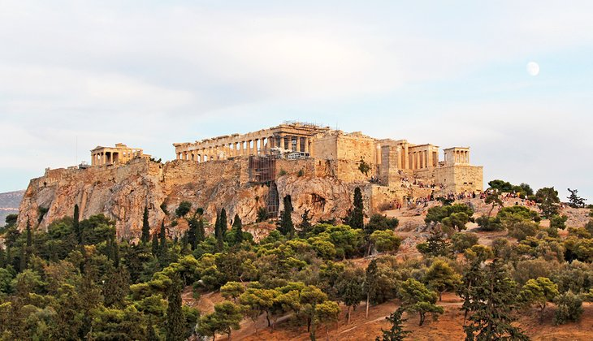

Eiffel Tower, Paris
Famous Food: Nearby cafes offer French delicacies.Famous Things: Iconic for its architecture and views.
Reason for Fame: Symbol of romance and French identity.

The Colosseum, Rome
Famous Food: Nearby eateries offer Italian delights like pasta and pizza.Famous Things: Iconic for its ancient architecture and historical significance.
Reason for Fame: Symbolizes the grandeur of ancient Rome, attracting millions of visitors.

Famous Thing: Iconic ancient citadel showcasing remarkable architecture, including the Parthenon.
Reason for Fame: Symbolizes the birth of democracy and Western civilization, attracting tourists worldwide for its historical significance.
The Acropolis, Athens
Famous Food: No specific association, but visitors to Athens enjoy traditional Greek cuisine nearby.Famous Thing: Iconic ancient citadel showcasing remarkable architecture, including the Parthenon.
Reason for Fame: Symbolizes the birth of democracy and Western civilization, attracting tourists worldwide for its historical significance.

The Taj Mahal, India
Famous Food: No specific association, but nearby regions offer diverse Indian cuisine.Famous Thing: Iconic marble mausoleum renowned for its exquisite architecture and romantic allure.
Reason for Fame: Symbolizes eternal love, designated as a UNESCO World Heritage Site, and attracts millions of visitors annually for its beauty and historical significance..

Statue of Liberty, New York City
Famous Food: No specific association, but nearby regions offer diverse culinary experiences.Famous Thing: Iconic symbol of freedom and democracy, towering in New York Harbor.
Reason for Fame: Symbolizes American ideals of liberty and welcomes immigrants, recognized as a UNESCO World Heritage Site.
Machu Picchu, Peru
Famous Food: No specific association, but nearby regions offer Peruvian cuisine.Famous Thing: Iconic Incan citadel renowned for its ancient architecture.
Reason for Fame: Historical significance and mystical allure as a New Seven Wonder of the World.